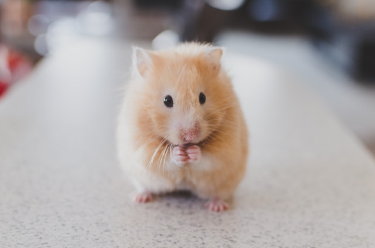
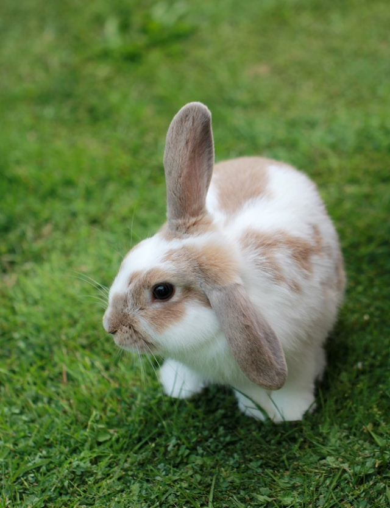
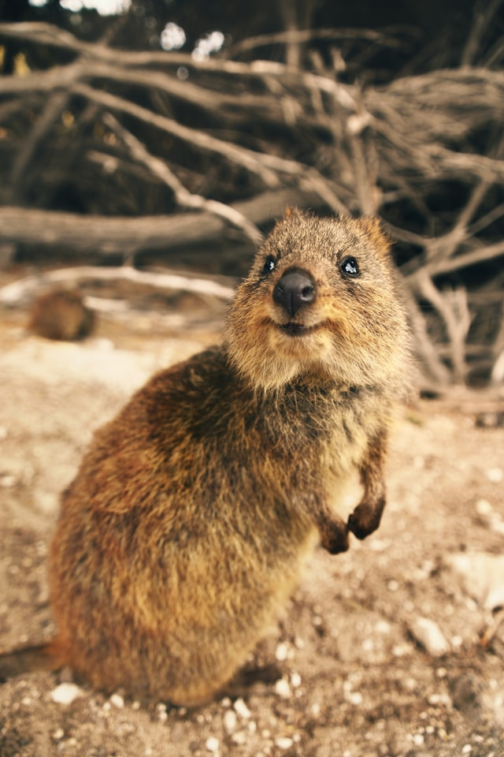
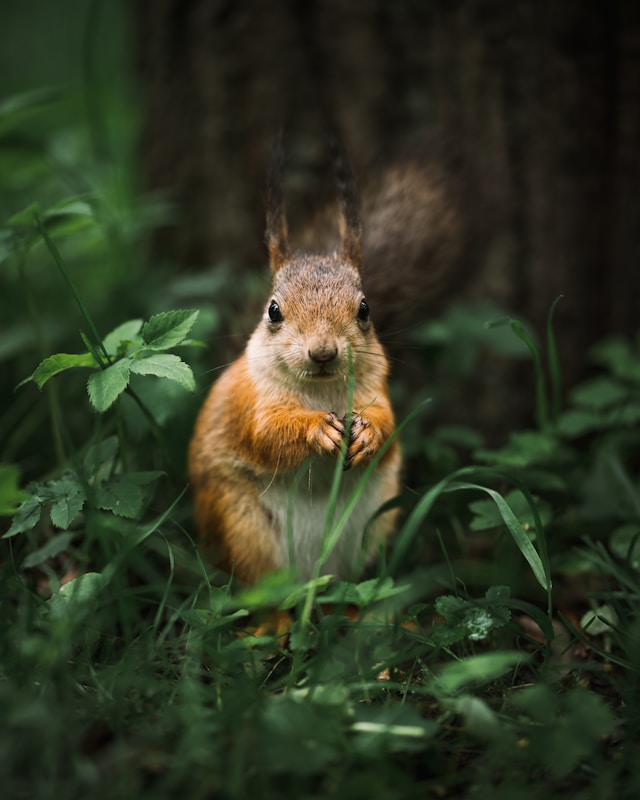

| Rodent | Name | Species | Habitat | Diet |
|---|---|---|---|---|
|  | Hamster | Phodopus roborovskii | Semi-desert regions of Europe, Asia and Africa | Seeds, grass, and insects. Also vegetables, fruits and nuts |
|  | Rabbit | Oryctolagus cuniculus | Meadows, woods, forests, grasslands, deserts and wetlands. | Hay, dried or fresh grass and green plants |
|  | Quokka | Setonix brachyurus | Rottnest Island | Native grasses and the leaves, stems and bark of a variety of plants |
|  | Squirrel | Florest | Nuts |